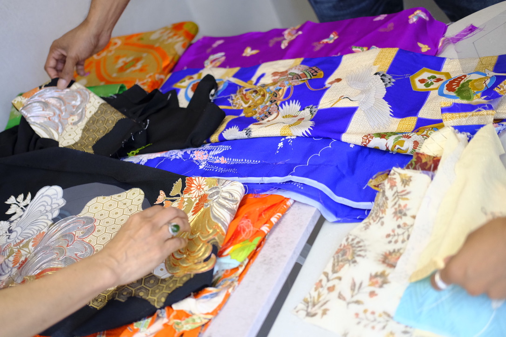
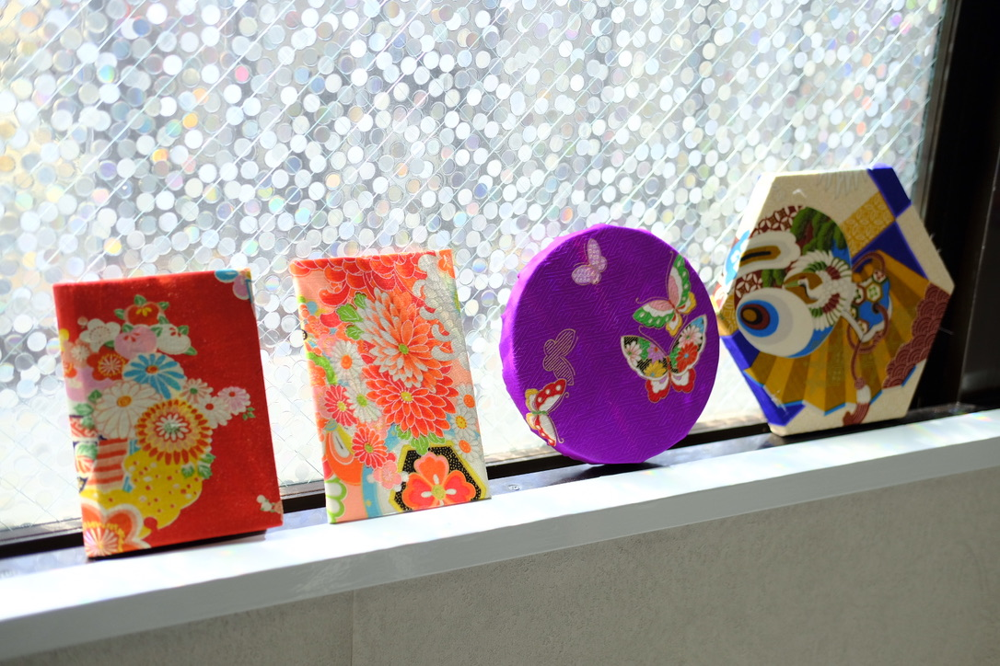
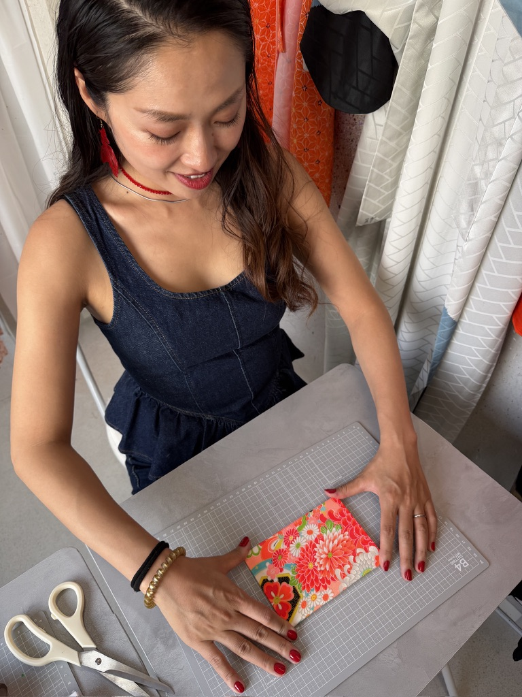
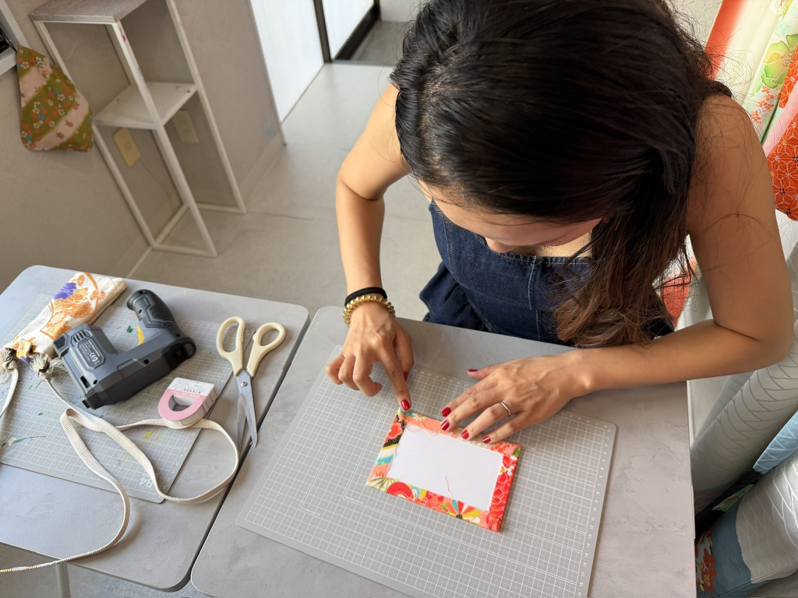
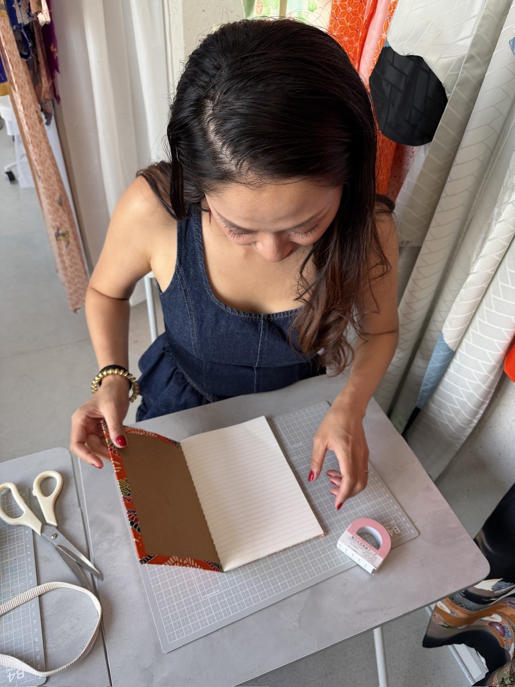
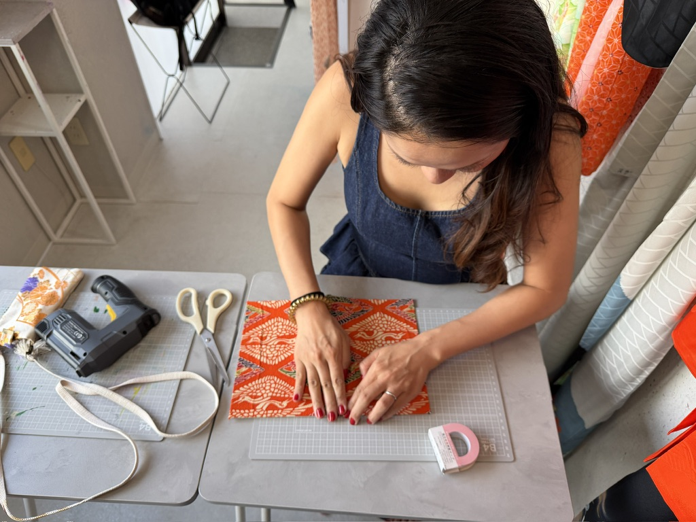
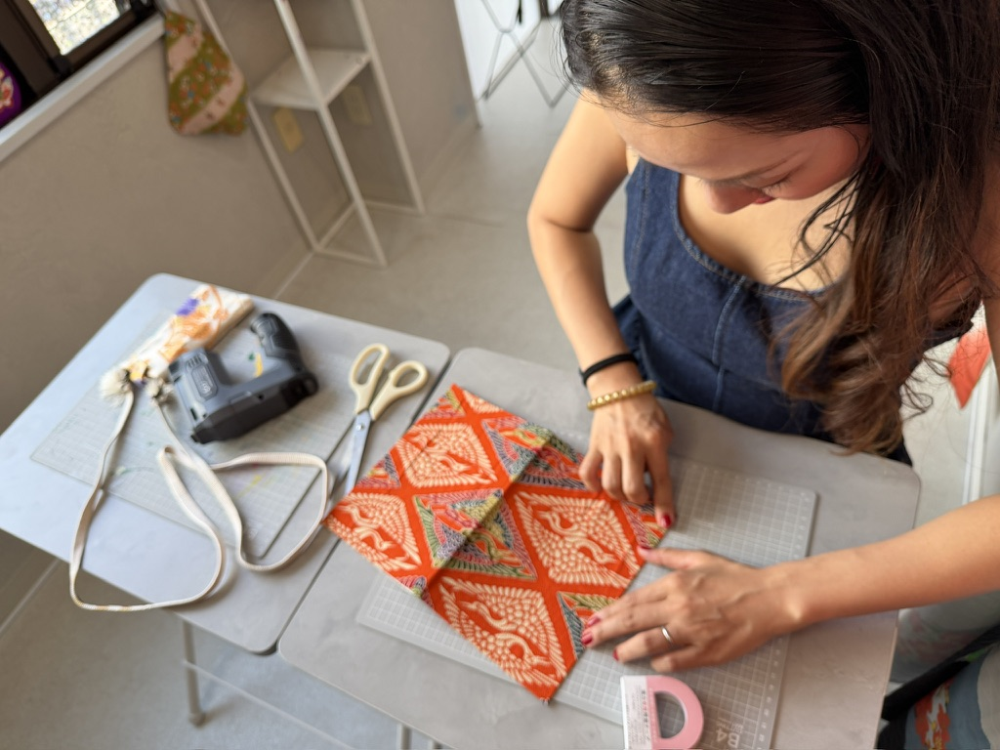
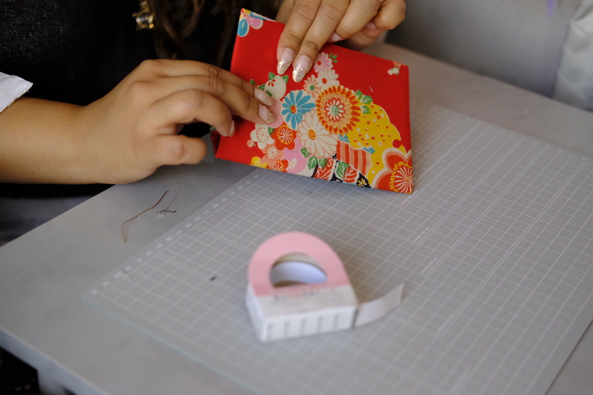
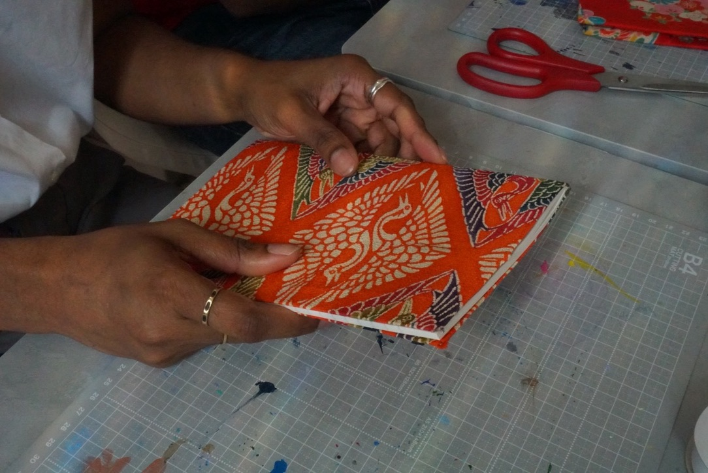
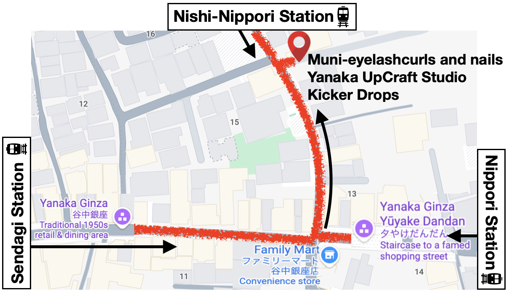

Special Collaboration Eventスペシャルコラボイベント
Hi5 comes to
Yanaka UpCraft Studio
Reconnect, create, and give beautiful Japanese textiles a new life.再会を楽しみながら、手づくりで美しい和の布に新しい命を吹き込みましょう。
Choose your session ↓参加する時間を選ぶ ↓

1-hour workshop所要時間：1時間
Ages 8 and up対象年齢：8歳以上
Up to 4 children with 2 parents watching is also possible.お子さま4名までの参加に、保護者2名が見学する形も可能です。Craft with Danielダニエルと一緒にクラフト体験
See Daniel. Create together. Practise English.ダニエルに会って、一緒に作って、英語も楽しもう。
Your session will be with Daniel, in English—a chance to see Daniel again and enjoy a bonus English lesson while you create!当日はダニエルが英語でワークショップを行います。ダニエルとの再会を楽しみながら、ものづくりと一緒に英語のプチレッスンも楽しめる特別な機会です！



The Hi5 special discountHi5限定の特別割引
A special rate,
just for this gathering.このイベントだけの
特別料金。
Everyone’s event price drops to ¥6,000 per person if all 24 participant spots are booked. Daniel will confirm the final price.全24枠のご予約が埋まると、皆さまの参加費がお一人様6,000円になります。最終的な料金はダニエルからご案内します。
Pay Daniel at the time of the event.お支払いはイベント当日、ダニエルへお願いします。


November 15 · Six 1-hour sessions · Four spots each11月15日・全6回・各回1時間・4名
Find a time to create.ご希望の時間をお選びください。
Choose a session, then email Daniel to reserve your spot. Availability is updated manually as bookings are confirmed.ご希望の回を選び、ダニエルへメールでご予約ください。空き状況はご予約の確定に合わせて手動で更新します。
Ages 8 and up. Places are offered on a first-come, first-served basis.対象年齢は8歳以上です。お申し込みは先着順で受け付けます。
Loading session availability…空き状況を読み込み中…
An email request does not reserve a place. Daniel will confirm your booking personally.メールを送った時点では予約は確定しません。ダニエルからの返信をもってご予約確定となります。


Let’s make it happenご予約・お問い合わせ
Request your place.参加のお申し込みはこちら。
For ages 8 and up. First come, first served—email Daniel to request your preferred session.8歳以上の方が対象です。先着順となりますので、ご希望の時間をダニエルへメールでお知らせください。
Contact Daniel by email to reserve your spot. Include your name, preferred session time, number of participants, and whether parents will be watching. Daniel will reply personally to confirm your booking.ご予約はダニエルへメールでお願いします。お名前、ご希望の時間、参加人数、保護者の見学の有無をお知らせください。ダニエルから返信し、ご予約を確認します。
Sending an inquiry does not reserve a place.お問い合わせの送信だけでは予約は確定しません。 Your booking is confirmed only after your host approves it and sends confirmation.ダニエルがご予約を承認し、確認の返信をお送りした時点で確定となります。
Hinode Heights 101日の出ハイツ101
3-11-5 Nishinippori, Arakawa City東京都荒川区西日暮里3-11-5
Tokyo 116-0013〒116-0013

Click the map to open Google Maps地図をクリックしてGoogleマップを開くYanaka Ginza access 谷中銀座へのアクセス
A creative corner of old Tokyo下町・谷中で楽しむものづくり
Yanaka Ginza is known for its traditional shopping street and relaxed neighborhood rhythm—a fitting home for making something by hand.昔ながらの商店街とゆったりした雰囲気が魅力の谷中銀座。手づくりを楽しむのにぴったりの場所です。
Search for Yanaka UpCraft Studio谷中アップクラフトスタジオ in Google Maps and look for our studio sign. The venue is a short distance from FamilyMart.Googleマップで「Yanaka UpCraft Studio」を検索し、スタジオの看板を目印にお越しください。会場はファミリーマートの近くです。
- Email / メール
- yanakaupcraftstudio@gmail.com
- From Nippori / 日暮里駅から
- Approximately 5 minutes on foot / 徒歩約5分
- From Sendagi / 千駄木駅から
- Approximately 7 minutes on foot / 徒歩約7分
- Studio hours / 営業時間
- By workshop reservation / ワークショップ予約制